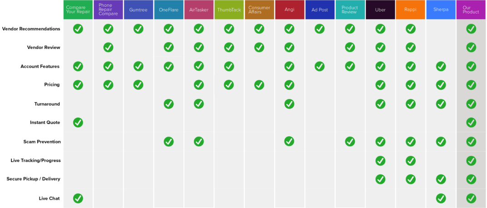
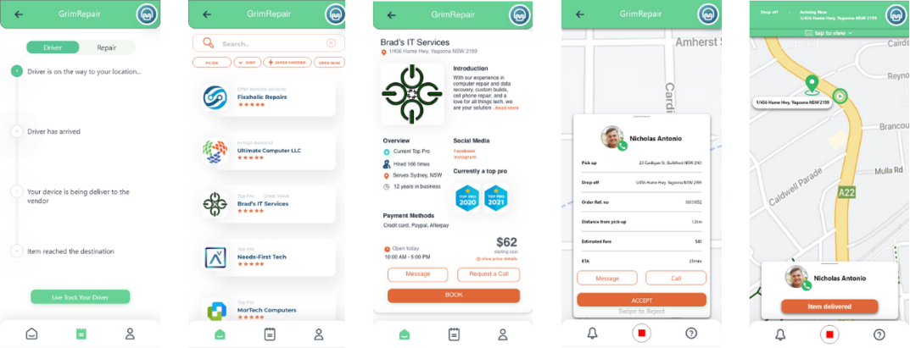

The On-Demand service app allowing
customers to lodge repair from their home
UX DESIGN . 12 WEEK DESIGN SPRINT . UNI COURSE PROJECT
Project Overview
Background
As part of the uni course, my team and I wanted to improve the experience in repairing electronic devices. The team was included with 5 designers, where I was responsible for the UI/UX design, research and final presentation.
Objective
This project was created as part of a uni capstone course with the objective of supporting people through the use of technology to improve the quality time at home.
Outcome
Here are some of our key achievements listed below:
- Key problems were identified. We were able to effectively apply the design process to identify the problem, ideate on the solution, prototype and implement the final product.
- Executed on-time.
- Won a design award. Each person on the team was able to contribute to the solution for the prototype which resulted in a very collaborative and splendid result.
ROLE
UX Research, Analysis, Prototyping & Usability Testing, Wireframes, Pitching
TIMELINE
12 weeks (Aug-Nov 2021)
CLIENTS
Customer, Driver
View Prototype
Process
Within 3 months of developing an idea to constructing hi-fidelity prototype, my team created an approximated
timeline with a goal of completing the app. The steps we applied in our design sprint was the Lean UX
methodology, which included the phases below.

Research & Solution
Our Research
We conducted a brainstorming and user assumptions that help us achieve the goal It was revealed that:
- Individuals were unaware of the pricing on repairing electronic devices due to lack of understanding in technology.
- Individuals wanted to take action in speeding up the turnaround in repair processes.
- Individuals would be able to save time without the need to drop off, pickup and wait for the device.
COMPETITOR ANALYSIS

PERSONAS
Customer
Driver
Our Solution
Through ideation, assumptions and competitor research, we developed an on-demand service that allows customers to get their items repaired quickly, safely and for the best available price on the market.
Wireframes
Few low-fidelity and mid-fi mid-fidelity wireframes for the MVP were created:


Key Features (MVP)
As a starting point, one of the members conducted competitor analysis to identify the pros and
cons of other similar apps and sites. These insights gathered has given opportunities for us to take
inspirations from particular features.
Based on the user assumptions from the Lean UX methodology, we identified the key features:
- Driver pickup/delivery. This feature removes the need for the customers to drive to the vendor's location and allow for a quicker turnaround on repairs.
- Vendor price/turnaround comparison. Customers are able to compare vendor prices and turnaround times for their particular issue.
- Real-time tracking. This feature gives the customer a live update of the item's whereabouts and repair progress.
Usability Testing
Using the prototypes, we recruited 10 participants to conduct the remote usability testing on our designs. During the test, we asked them to complete a series of tasks that helped us to understand what their thoughts and see if they could accomplish the goals. This was also the perfect time to ask about their likes and dislikes for the prototype.
Tasks
Customer
01Sign in to your account and go to your profile
02Repair to lodge for your broken 'Samsung Galaxy S'
03Go through the current and previous orders
Driver
01Sign in to your account and go to your profile
02Go through the flow of starting the job
03Find out your earning details
After the user interviews, we created an affinity map to map out what needed to imrpove and had done well by grouping into 'driver' and 'customer' categories. By applying the bottom-up approach, we grouped the coded interview into and sub-categories that focuses on the app's features. In the final interation, we further refined the categories into clear and meaningful themes.
Designs
After few iterations, we created a high-fidelity wireframes and interactive prototype with a minimalistic UI design.
Welcome, Registration, Login
Home Screen
List of Devices, Brand & Model
Order List & Live tracking
Messages
Driver's Earnings
Development
My team used 3 different applications for this prototype: Balsamiq, Adobe XD and Protopie. We started off with sketching out our low-fidelity prototype in Balsamiq. These sketches were then improved to develop mid-fidelity prototype in a more attractive design by using Adobe XD. We implemented hi-fidelity with the use of Protopie to create a more interactive prototype.
Results and takeaways
Upon completing the final prototype, I believe that my team has designed a mobile application that cover most of the
features to satisfy the user's needs and goals when it comes down to looking for a repair
vendor. Moreover, this project has provided me a valuable experience in exploring the auto-animate
features in Adobe XD as well as allowed me to apply the skills I have obtained.
During the development, we came across an issue of having excessive external features when only
3 were needed for the MVP. Thus, we had to keep the prototype minimal to accomplish the app. I was able to learn that
it is important to deliver the best user experience and ensure that the layout content is
functional.